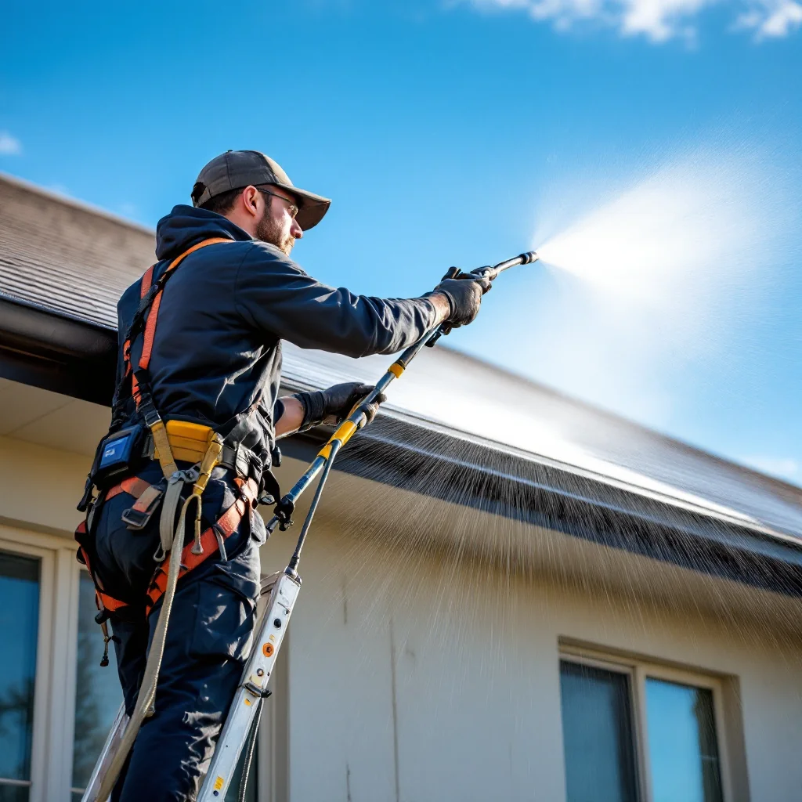

Roof Cleaning in Knoxville, TN

Soft Wash Roof Cleaning — Safe and Effective
Those black streaks on your roof are caused by Gloeocapsa magma, a type of algae that feeds on the limestone filler in asphalt shingles. Left untreated, it shortens your roof's lifespan and drives up cooling costs by reducing reflectivity.
We use a low-pressure soft wash system (never high pressure on roofs) with professional cleaning solutions that kill algae, moss, and lichen at the root. This is the method recommended by ARMA (Asphalt Roofing Manufacturers Association) and will not void your shingle warranty.
Why Soft Wash?
- High pressure damages shingles and voids warranties
- Soft wash kills organisms at the source, preventing rapid regrowth
- Results last 2-3 years vs. weeks with pressure washing
- Safe for all roofing materials: asphalt, tile, metal, slate
Roof Cleaning Pricing
Roof cleaning in Knoxville typically costs $350-$700 depending on roof size, pitch, and level of growth. Most standard residential roofs fall in the $400-$550 range. See our cost guide.